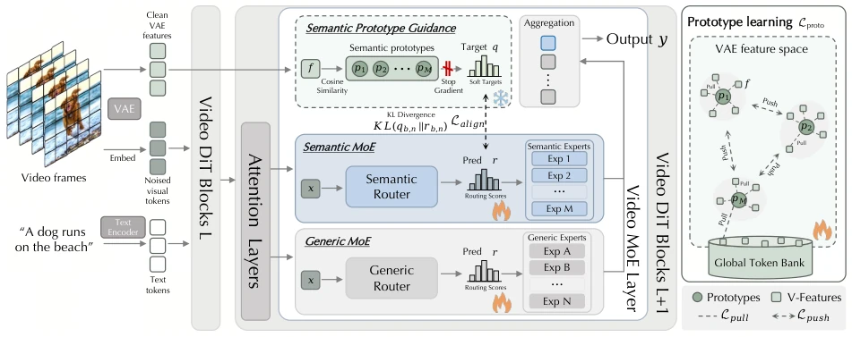
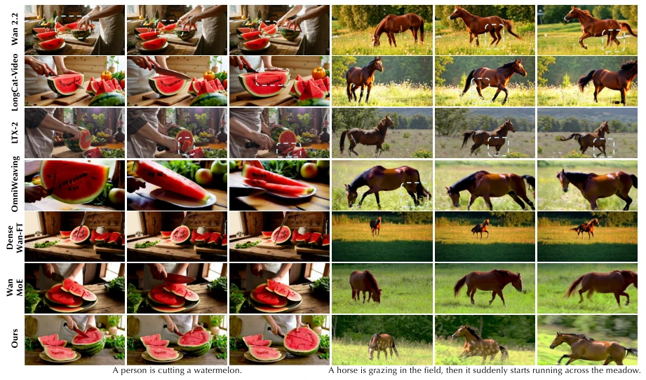
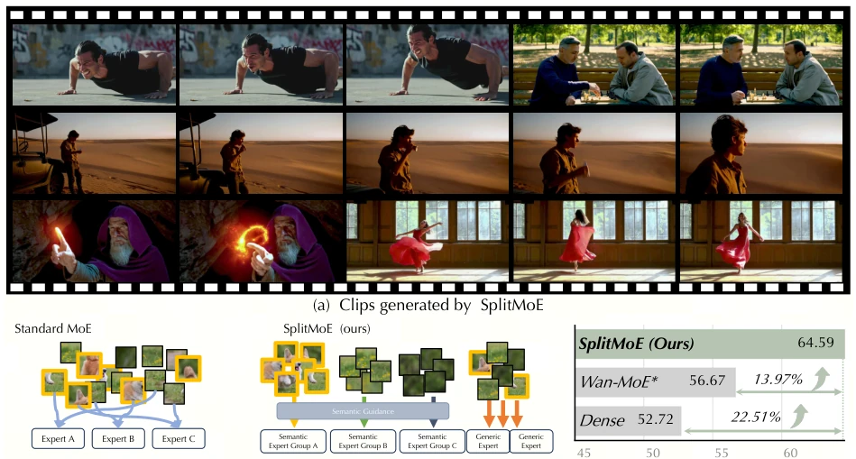
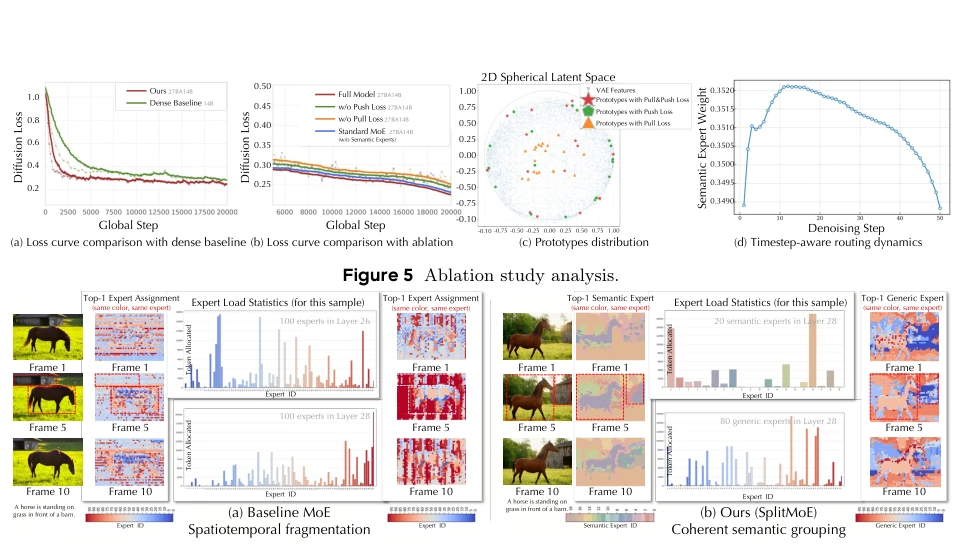

This paper delivers a lesson to visual generation models that blindly copy the MoE routing mechanism from LLMs: practicing "egalitarianism" in the video domain is asking for trouble. The authors sharply point out that existing methods forcibly enforce expert load balancing, resulting in originally coherent video frames being fragmented, causing objects to experience "schizophrenia" on the timeline. SplitMoE's "role-based" design is indeed impressive, splitting experts into two groups: "semantic" and "general", letting those handling coarse tasks do coarse work and those handling details do detail work; not only does it converge faster, but the generated videos are also more stable. However, this approach also depends on luck, as it relies on frozen VAE features as teachers; if the teacher teaches poorly, the student will also go astray. Moreover, although this explicit prototype guidance and dual-branch architecture yield excellent results, the routing overhead and memory bandwidth bottlenecks during inference remain a troublesome "invisible tax", leaving a gap before true large-scale deployment.
The research motivation targets the "uniformity trap" of MoE architecture in current visual generation models. Existing MoE designs mostly originate from language models (such as GLaM [3], Switch Transformers [4]), with the core assumption of uniform token distribution and discrete semantics. However, video data possesses high spatiotemporal redundancy and long-tail semantic distribution, which is completely different from text. Directly applying language model load balancing strategies causes semantically coherent adjacent image blocks to be routed to different experts, while redundant backgrounds occupy multiple experts, causing spatiotemporal fragmentation and structural distortion. The authors prove through experiments that standard MoE performs extremely poorly in semantic distinction and intra-region routing consistency, failing to capture video's high correlation. This mechanism mismatch makes existing video MoE models, when scaling parameters, often fall into the dilemma of "more expansion, more chaos", unable to effectively utilize sparse computing resources to improve generation quality.

Figure 3 Pipeline of SplitMoE. SplitMoE splits each Video MoE layer into Semantic and Generic MoE branches, where VAE-prototype induced soft targets guide semantic routing while the generic branch preserves flexible residual modeling capacity. Learnable prototypes are optimized in the VAE feature space with pull-push regularization and a global token bank, encouraging semantic experts to form diverse and well-covered visual concepts.
SplitMoE proposes a role-based sparse architecture, the core of which is explicitly decoupling the expert pool into two mutually exclusive subsets: "semantic experts" and "general experts". In the overall process, video tokens first pass through a dual-path routing mechanism: one path calculates affinity with semantic experts, the other with general experts, allowing a token to activate both types of experts simultaneously. Innovation one lies in "Prototype-Guided Semantic Routing". The authors introduce learnable prototypes as semantic anchors in the VAE feature space, using VAE's clean features as teacher signals, aligning the router's prediction distribution via KL divergence to ensure semantically similar tokens are routed to the same group of experts. Innovation two lies in "Pull-Push Regularization". When optimizing prototypes, "pull" force is used to attract prototypes to current and historical VAE feature manifolds to prevent prototype drift; "push" force is used to force distance between prototypes to avoid redundancy collapse, thereby constructing a comprehensive and uniformly distributed prototype topology. Additionally, general experts adopt a load balancing strategy without auxiliary loss, while semantic experts naturally achieve adaptive balance through semantic alignment, avoiding structural damage caused by forced uniform distribution.

Figure 4 Qualitative comparison with baseline methods. Zoom in for better comparison. We provide more examples and comparisons with more baseline methods in the video demo.
Experiments are based on upgrades to the Wan 2.2 model, under the premise of keeping activated parameters (14B) consistent with the dense baseline, comparing various MoE variants and SOTA video generation models (such as CogVideoX-1.5, HunyuanVideo, LTX-2, etc.). Evaluation adopts VBench-2.0 and T2V-CompBench as two major benchmarks. Results show that SplitMoE comprehensively surpasses standard MoE and dense fine-tuning baselines on key metrics such as creativity, human fidelity, and physical consistency, especially with obvious advantages when handling complex object interactions and long temporal actions. Ablation studies confirm that removing either prototype guidance or pull-push regularization will lead to significant performance decline, proving the necessity of the dual regularization mechanism. Visualization analysis further reveals that SplitMoE automatically allocates more weight to semantic experts in early denoising to build global structure, later switches to general experts to refine details, presenting a "coarse-to-fine" routing dynamic consistent with the diffusion process, effectively solving standard MoE's spatiotemporal jitter and fragmentation issues.

Figure 1 SplitMoE scales video diffusion models by introducing semantic-aligned expert partitioning, reducing spatiotemporal fragmentation, and generating higher-quality videos than dense fine-tuning and WAN with a standard MoE.

Figure 6 Comparison of spatial routing and expert loads. (a) Baseline MoE scatters correlated patches across experts under strict capacity constraints, causing fragmented routing and poor spatiotemporal consistency. (b) SplitMoE routes coherent entities to Semantic Experts and residual textures to Generic Experts, achieving stable utilization without enforcing uniformity.